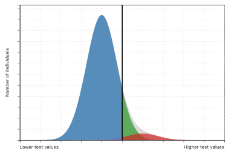

Interactive learning modules for clinical reasoning.
A growing collection of visual, interactive tools for learning medical concepts. These modules are designed to make abstract ideas easier to see, manipulate, and remember.
Available modules
Interactive simulator
Diagnostic Testing Simulator
Explore sensitivity, specificity, prevalence, PPV, NPV, cutoff values, and population area diagrams using an interactive diagnostic testing model.
Open simulator →
Interactive simulator
Harvey 2K26
Practice pediatric cardiac auscultation by selecting cases, listening at auscultation points, and revealing clinical case information.
Open simulator →